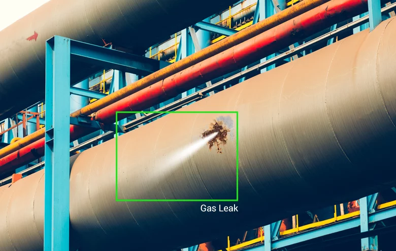
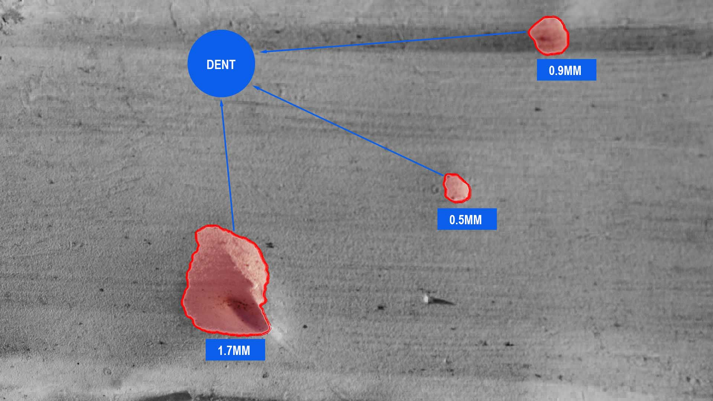
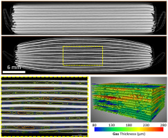
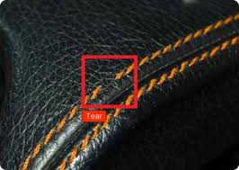
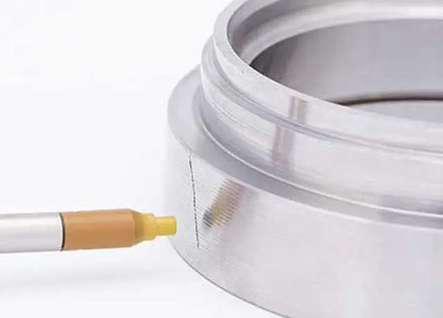

Loading...
Automotive
Automotive

Weld probe
Because of its simplicity and wide range of applications, spot welding is the most common form of welding in industry today. Over the past few decades, robots have taken over these spot welding tasks from manual workers.
Plate Cutting probe
Intelligent sensor systems help monitor and automate the cutting process. It makes your production process more efficient, transparent and economical. Various solutions help to ensure that the laser cutting process is permanently stable and accurate, obtain optimal cutting qualities and avoid production rejects.

Leak Detection
Listening discs and ground microphones are some of the basic tools a plumber uses to locate and pinpoint water leaks. Listening discs are pieces of equipment that help plumbers locate leaks through drywall, cabinets, and other furnishings.
Painting And Surface Defects
AI-powered visual inspection uses computer vision AI to analyse machinery, production processes, inventory levels, and workplaces to ensure safe, efficient, and effective business processes.

Dent probe
These technological advances now make it possible to analyse millions of vehicle images and accurately classify even the smallest defects. Dents, dings, scratches and chips that are often overlooked by aninspector are identified and digitally displayed on a dashboard in less than a minute.
Missing parts probe
Artificial intelligence in every aspect of the car manufacturing process. Examples of AI in the automotive industry include industrial robots building vehicles and autonomous cars navigating traffic with machine learning and vision.
Glass/scratches probe
Scratches are the most common damage to metal surfaces. When a metal car part moves or rubs against the surface of another hard or sharp object, scratches form. Scratches can occur if a hard or sharp object runs over the car's metal surface.

EV Battery
AI helps in energy consumption management, safety management, security and creates a pollution-free eco-friendly environment which is the need of present and future society. Society needs smart improvements in user-friendly vehicles deployed through AI and electric vehicles.

Seat Thread probe
AI manufacturing inspection is that systems can be trained to identify manufacturing defects by leveraging large datasets of manufacturing examples—companies can train their own classifiers to identify manufacturing defects on a production line, which reduces waste automatically.

Crack probe Of Automotive Parts
A new method for detecting cracks caused by the vehicle stamping process by using a non-destructive, acoustic emission test. A high-quality and reliable automotive manufacturing process requires crack detection methods based on continuous monitoring and non-destructive testing.

Radiator (HVAC System)
Use a vacuum to remove dust, then wipe the surface of the radiator. Once you get into the habit of doing this, you'll see an improvement in thermal efficiency and an added benefit – it'll keep your house less dusty!
Final assembly probe
The automotive industry has adopted many AI innovations that are used for vehicle route planning and obstacle avoidance, but are incorporated into every stage of development, from gathering parts for production to testing software to modelling how these systems will work


© Adople AI, All Right Reserved.